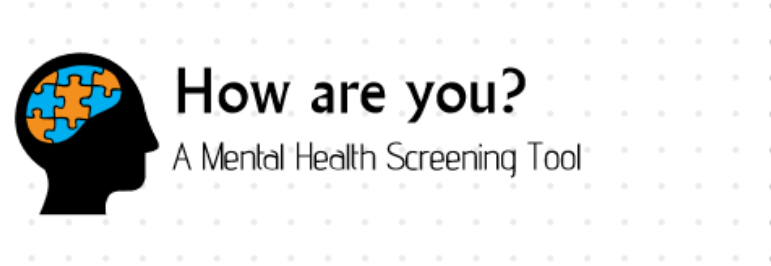

Trends and Statistics
File Requests
About Us
JD
Notifications
DSM Questionnaire
Test
Questions
Demographic
Information
Your
Results
Please take a moment to answer the following
optional
questions. Your answers help us provide better information and support for people like you.
About You
Age Range
4-10
11-18
19-24
24-35
36-50
Gender
Male
Female
Others
About Your Mental Health
Have you ever been diagnosed with a mental health condition by a professional?
Yes
No
Copyright
| How are you?